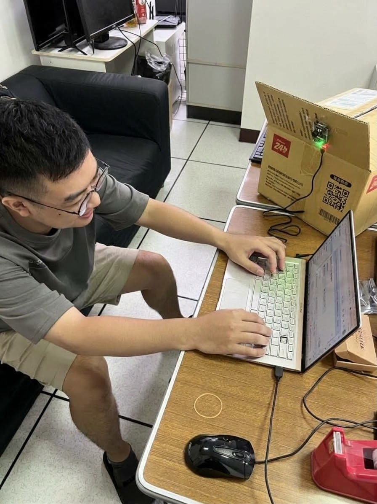

物聯網 影像辨識創意實作｜第一週 提案與可行性驗證｜平台：Ameba AMB82-MINI＋攝影機
| 成員 | 主要角色 | 負責內容 |
|---|---|---|
| 余易謙 61475075H | 韌體與模型 | Ameba 程式、辨識門檻調整、LED 控制；第二週負責狀態機（持續時間、防重複計數） |
| 沈子淵 61475005H | 網頁與整合 | 流程圖、驗證影片的拍攝與上傳；第二週負責板上網頁與事件紀錄 |
| 徐子豪 61475021H | 測試與文件 | 構想比較、成功標準、測試表的設計與執行、提案 PDF 彙整；第三週負責測試紀錄與失敗分析 |
| A. 讀書專注小幫手（選定） | B. 實驗室無人節能提醒 | C. 手勢答題闖關 | |
|---|---|---|---|
| 使用情境 | 學生在宿舍書桌或自習座位上讀書，板子架在桌子斜前方、高出桌面約 30 公分 | 實驗室或社團辦公室的值日生、管理者，板子架在空間角落拍整個座位區 | 課堂複習或社團活動的互動小遊戲 |
| 問題需求 | 讀書時會不自覺拿起手機，事後也不知道分心了幾次、多久。用影像判斷不必在手機上裝 App，也不用穿戴裝置 | 最後離開的人常忘記關燈、關電扇或冷氣，造成浪費。紅外線感測器只能感應移動，人坐著打電腦不動時會被誤判成沒人；用影像辨識「有沒有人」比較準確 | 舉手搶答容易混亂，手勢作答比較公平，也能自動計分 |
| 辨識內容 | person（人）、cell phone（手機） | person（人），只判斷畫面中有沒有人 | 手勢（例如比 1～4 根手指） |
| 系統反應 | LED 提示、網頁警示、分心次數與時間統計 | 連續 10 分鐘沒有人時亮 LED 提示，網頁顯示「無人，請確認是否關電」，並記錄每天最後離開的時間 | 網頁出題、作答、計分 |
| 可行性 | SDK 內建 YOLOv4-tiny，COCO 類別本來就有 person 和 cell phone，已在板上驗證 | COCO 類別有 person，模型支援度高；但一個鏡頭要涵蓋整間實驗室，距離遠、人可能被螢幕或隔板擋住，偵測率要實測 | SDK 有 HandGestureDetection 範例，但支援哪些手勢、準確度如何都還要實測，風險較高 |
| 失敗處理 | 信心值不足時判為「不確定」不觸發；沒有人時暫停計時；短暫遮擋有 2 秒寬限期 | 短暫沒偵測到人不立刻判定無人，要連續 10 分鐘才提醒；燈已關、畫面太暗時標示「無法判斷」，不發出提醒 | 手勢不明確不作答；同一手勢要放下後才能再答 |
| 隱私 | 只拍使用者本人的書桌，不做人臉辨識、不註冊人臉 | 公共空間會拍到其他成員，需事先公告並取得同意，只判斷有沒有人、不存影像 | 只拍手 |
| 構想 | 需求具體 | 模型支援 | 容易量測 | 延伸空間 | 隱私風險低 | 合計 |
|---|---|---|---|---|---|---|
| A | 5 | 5 | 5 | 5 | 4 | 24 |
| B | 4 | 5 | 4 | 3 | 3 | 19 |
| C | 3 | 3 | 4 | 4 | 5 | 19 |
板子固定在書桌斜前方、高出桌面約 30 公分的位置，往下拍向桌面與使用者上半身。這個位置是第一週實測後決定的：手機背面朝向鏡頭時幾乎偵測不到，從斜上方往下拍，鏡頭能看到使用者手中手機的螢幕，實測可以偵測到手機。使用者開始讀書後：

| 情況 | 可能結果 | 系統怎麼處理 |
|---|---|---|
| 光線不足 | 信心值下降，偵測時有時無 | 30～49 分判為「不確定」，不亮燈也不計數；連續 10 秒完全沒有結果時，提示檢查光線 |
| 手機被手遮住一部分 | 手機的偵測框短暫消失 | 有 2 秒寬限期，期間不算結束分心，避免同一次被重複計數 |
| 把其他物品誤認成手機（遙控器、計算機） | 短暫誤報 | 要「連續 3 秒且在桌面區域內」才觸發，並在第三週用干擾物實測誤報率 |
| 使用者離開座位 | 沒有 person | 狀態變成「無人」，暫停所有計時，不計分心 |
| 畫面中有其他人 | 多個 person | 只拍自己的座位，鏡頭角度避開走道；第二週只計算畫面中最大的那個人 |
| # | 標準 | 測試方法 |
|---|---|---|
| 1 | 第一週：手機被確定偵測（信心值 ≥ 50）後，藍燈在 1 秒內亮起 | 對照序列埠時間戳記，並用影片逐格確認，測 10 次 |
| 2 | 最終版：手機在桌面區域連續出現 3 秒後，1 秒內亮藍燈並更新網頁（也就是拿起手機 4 秒內提醒） | 用碼錶加錄影測 20 次，記錄每次的反應時間 |
| 3 | 室內正常照明、距離 40～80 公分，拿手機 20 次，至少 17 次（85%）成功觸發 | 測試表逐次記錄 |
| 4 | 拿書、杯子、遙控器、空手各 10 次，誤觸發不超過 2 次 | 測試表逐次記錄 |
| 5 | 人離開畫面後 3 秒內狀態變成「無人」並暫停計時 | 測 10 次 |
| 6 | 同一次拿手機（中間被遮擋短於 2 秒）只計 1 次 | 刻意遮擋手機 10 次，檢查計數 |
focus_check.ino，改自 Realtek 範例 ObjectDetectionCallback。只保留 person 和 cell phone 兩類，依信心值分成 NO_TARGET、PERSON、UNSURE、PHONE 四種狀態，綠燈代表有人、藍燈代表有手機，RTSP 畫面上會疊加狀態文字。| 驗證項目 | 預期 | 影像張數 | 人 ≥ 50 | 手機 ≥ 50 | 手機 30～49 （無法確定） | 最高分 人／手機 |
|---|---|---|---|---|---|---|
| 沒有人、沒有手機（10 秒） | NO_TARGET，燈全滅 | 59 | 0% | 0% | 0% | 0／0 |
| 坐著讀書、沒有手機（15 秒） | PERSON，綠燈亮 | 87 | 100% | 0% | 0% | 93／0 |
| 用平常姿勢滑手機（20 秒） | PHONE，藍燈亮 | 119 | 100% | 79% | 8% | 93／88 |
| 手機螢幕朝上放在桌面、沒在使用（10 秒） | 不應判為 PHONE | 59 | 100% | 0% | 0% | 92／0 |
百分比為該情況下所有影像中達到該信心值的比例。手機 30～49 分判為 UNSURE（無法確定），程式設計為不亮藍燈、不計數。辨識速度實測每秒約 6 張（同時開著 RTSP 串流）。
驗證時發現的問題或限制：手機螢幕朝向鏡頭時比較容易被偵測到；背面朝向鏡頭時幾乎偵測不到。另外，偵測結果會在相鄰幾張影像之間時有時無，狀態切換很頻繁，這是第二週要加入「連續 3 秒判斷」與「2 秒寬限期」的原因。
| 項目 | 數量 | 用途 |
|---|---|---|
| Ameba AMB82-MINI 開發板＋攝影機模組 | 1 | 影像輸入與板上辨識（課堂提供） |
| USB 傳輸線 | 1 | 供電、燒錄、序列埠 |
| 筆電（Arduino IDE 或 VS Code，Ameba SDK 4.1.1） | 1 | 開發、看序列埠、用 VLC 看 RTSP 畫面 |
| 手機支架或紙盒 | 1 | 固定鏡頭角度，讓測試可以重現 |
| 測試物品：手機、書、杯子、遙控器、計算機 | 各 1 | 正向與干擾測試 |
不需要另外購買硬體，LED 使用板上內建的 LED_G（D24）和 LED_B（D23）。
| 週次 | 工作項目 |
|---|---|
| 第一週 | 三個構想比較與選題；板上跑 YOLO，驗證 person 和 cell phone 能被辨識；畫流程圖、訂成功標準；錄驗證影片 |
| 第二週 | 桌面辨識區域、連續 3 秒判斷、2 秒寬限期、防重複計數的狀態機；板上 HTTP 網頁（即時狀態、次數、時間、事件列表）；錄操作影片 |
| 第三週 | 依成功標準 1～6 做系統化測試（不同光線、距離、干擾物）；分析失敗原因、調整門檻或區域後重測；README、成果報告、展示影片 |
NeuralNetwork/ObjectDetectionCallback，以及其中的 ObjectClassList.h。